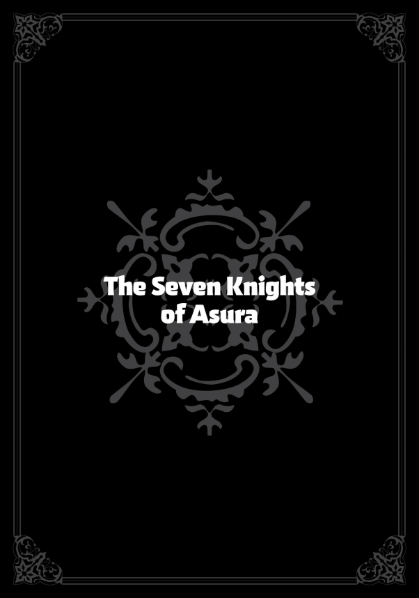
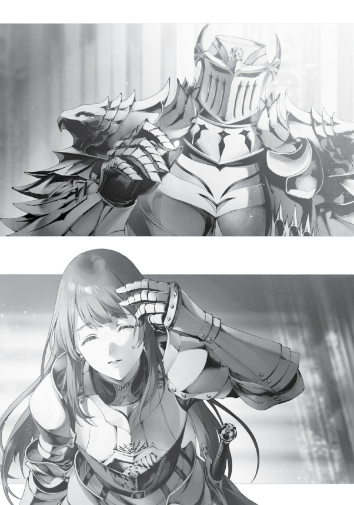

Çok, çok uzun zaman önce, Su Tanrısı Stili’nin bile henüz var olmadığı dönemlerde, bir ülke Deniz Ejderha Kralı tarafından terör estirilerek korkutuluyordu. Halk, Deniz Ejderha Kralı’nın sularında balık avlamış ve onun gazabını üstüne çekmişti.
Neredeyse her gün, balıkçı tekneleri mahvoluyor, Deniz Ejderhaları limanlarda görünmeye başlıyordu. Ülkenin şövalyeleri onlara karşı durmaya çalışsa da, Deniz Ejderhaları devasa boyutlardaydı ve suda hızla süzülerek savaşanları tüketiyordu.
Krallığın düşüşü an meselesiydi.
Bu mesele, kralın omuzlarına büyük bir yük bindirmişti. Kral, Deniz Ejderha Kralı’nı kim öldürürse kızını ve tahtını ona vereceğini duyurdu.
Bunun üzerine pek çok şövalye, şampiyon ve kahraman Deniz Ejderha Kralı’na meydan okudu ama hepsi yenilgiye uğradı.
Bir gün, bir adam ortaya çıktı. Kalçasında eski püskü, yıpranmış bir kılıç sallanıyordu ve kıyafetleri lime limeydi.
Sonradan anlatılan hikayelerde onu nefes kesici bir yakışıklılıkta betimleseler de, aslında gerçek anlatımlarda o pek de göz alıcı biri değildi. Yüzü kirle kaplı, serseri kılıklı bir adamdı.
Adı Reidar’dı. Saraya çıkıp krala Deniz Ejderha Kralı’nı öldürmek istediğini söyledi.
Elbette kral, bu yabancıya pek inanç duymadan, yarı umudunu kaybetmiş bir şekilde kabul etti.
Ama Reidar gerçekten güçlüydü. Okyanusun yüzeyini dondurarak denizin derinliklerine bakabildi ve Deniz Ejderhalarının hareketlerini gözetledi.
Bir anda, göz açıp kapayıncaya kadar, Deniz Ejderha Kralı’na ulaştı. Deniz Ejderha Kralı, buzları paramparça ederek saldırıya geçti ve kudretle kıvrılarak Reidar’a doğru hamle yaptı.
Ancak Reidar, eski ve yıpranmış kılıcıyla bu ölümcül saldırıyı savuşturdu ve karşılık olarak tek bir darbeyle canavarın kafasını uçurdu.
Deniz Ejderha Kralı’nın başını koltuğunun altında taşıyarak ülkeye döndüğünde onu bir kahraman gibi karşılamaları gerekiyordu. Kral, ona bir ömür boyu çalışmasına gerek kalmayacak kadar altın ve mücevher bahşetti, ancak verdiği sözün en önemli kısmını geri aldı: ne kızını ne de tahtını Reidar’a vermedi.
Reidar bu duruma öfkelenmedi, ama yüreğini büyük bir hüzün kapladı. Çünkü prensesi seviyordu.
Geçit törenlerinde ve şölenlerde uzaktan onu izlerken, prenses Reidar’ın kalbini kazanmıştı. Gücüyle tahtı zorla ele geçirebileceğini bilse de, sevdiği kadını kazanamayacaksa bu ülkeden gitmeye karar verdi.
Ancak onun yerine öfkelenen biri vardı: prenses. Babasına bağırdı, onu yumrukladı, tekmeledi ve sarayı terk etti.
Reidar’ın peşinden koştu ve ülkeyi terk etmek üzere olan adamın önünde diz çöküp yalvardı:
“Ülkemi terk ettim. Artık bir prenses değilim.
Artık bir adım bile yok. Beni eşin olarak kabul ettiğinde bir krallık kazanmayacaksın, kral da olmayacaksın.
Eğer bu senin için kabul edilebilir bir şeyse, ne olur, beni eşin yap.”
Reidar, gülümseyerek prensesi kollarına aldı. Birlikte ülkeyi terk ettiler.
Evlenip gözden kayboldular.
Yıllar sonra, dünyanın bir köşesinde Su Tanrısı Stili doğdu. En azından anlatılanlara göre böyle oldu.
Bu olay, şu kanunun temeli olarak kabul edilir: “Su Tanrısı’nın eşi, adını terk edecektir.”
Isolde Cluel, Asura Krallığı’nda Su Tanrısı Stili‘nin başı ve krallığın şövalye birliğinde kılıç eğitmenlerinden biriydi. Şu anda Su İmparatoru seviyesine ulaşmıştı ama Su Tanrısı Stili’nin beş gizli tekniğinden sadece üçüncüsüne kadar öğrenmişti.
Birkaç ay içinde Su Tanrısı unvanını alacağı bir tören düzenlenecekti.
Kaç yaşında olduğu tam olarak bilinmiyordu ama yirmilerinde gösteriyordu. Asil hatlara sahipti ve neredeyse maviye çalan koyu, muhteşem saçları vardı.
Güzelliği herkesçe kabul edilse de, bazı dedikodular onun genç görünmek için makyaj yaptığını söylüyordu. Asura Krallığı’nda onun yaşını bilen tek kişi Kraliçe Ariel’di.
Isolde aktif bir şekilde kendine bir eş arıyordu. Su Tanrısı unvanını aldığında, yıllar süren zorlu antrenmanları büyük ölçüde tamamlamış olacaktı.
Elbette yeteneklerini geliştirmeye devam edecekti, ancak bu önemli bir dönüm noktasıydı ve artık evlilik düşünmenin zamanı geldiğini hissediyordu.
Ne yazık ki bu arayış pek de kolay ilerlemiyordu. Elbette talibi boldu.
Sonuçta Su Tanrısı olmaya hazırlanan bir kadın, özellikle Su Tanrısı Stili’ni benimsemiş kılıç ustaları arasında çok rağbet görüyordu. Güzelliğiyle büyülenen ve antrenmanlara olan bağlılığına hayranlık duyan pek çok erkek vardı.
Ancak bunlar kılıç ustasıydı. Hayatlarını kılıçla kazanıyorlardı ve çoğu, kendilerinden güçlü bir kadınla evlenebilecek kadar geniş düşünceli değildi.
Isolde ise kendisine denk, en azından Kral Seviyesi yeteneklere sahip birini tercih ederdi. Bir Asura soylusu da iş görürdü.
Su Tanrısı Stili’ni kullanan kadınlar Asura’da oldukça popülerdi. Savunmaya dayalı bu stilin kılıç ustaları, Kılıç Tanrısı Stili kullanan kadınların aksine fazla atılgan değildi; daha nazik ve kadınsıydılar.
Bazen dik başlı olabilirlerdi ama ne istediklerini iyi bilirlerdi.
Isolde, bu konuda örnek biriydi. Sarayda nasıl davranması gerektiğini biliyordu.
Genç, güzel, iyi huylu ve kocasına saygı gösterecek bir kadındı. Üstüne üstlük, usta bir kılıç ustasıydı.
Böyle bir kadını eş olarak isteyen çok sayıda Asura soylusu vardı. Bu adamlar, Isolde’nin gündüzleri onlara hizmet etmesini, geceleri ise yataklarını ısıtmasını hayal ediyordu.
Ancak Isolde, sadece şehvet düşkünü kocalara zerre kadar ilgi duymuyordu.
Ama ara sıra birini gördüğünde, içinden şöyle diyordu: “Olabilir gibi duruyor.”
Yakışıklı, iyi huylu, düzgün bir soydan gelen ve kılıçta da fena olmayan biri çıkıyordu karşısına. Bu beyefendi, sapkın düşüncelerini ustalıkla gizleyip, inci gibi dişlerini göstererek ona gülümsüyordu.
Prens. Isolde, delicesine ona vurulmuştu.
Etrafındaki insanlar ona “Ona güvenme. O fırsatını bulunca tam bir pisliktir” dese de, Isolde kulağını tıkadı.
Prens yakışıklıydı, sevimliydi ve Isolde, güzel bir yüz karşısında asla dayanamıyordu. “Olabilir” diye düşünmüştü.
Ancak prensle evlilik konusunda konuşurken Isolde bir şart koşunca, prens hiç düşünmeden teklifini geri çekmişti:
“Bir gün ben Su Tanrısı olup, Su Tanrısı Reida Reia adını alacağım. Eğer benimle evlenirsen, adını ve aileni terk etmelisin.
Su Tanrısı’nın eşi aile adını taşıyamaz.”
Bu, Su Tanrısı Stili’nin geleneğiydi. Bu kurala uymayanlara ceza verilmezdi ya da uyanlara özel bir ödül yoktu.
Yalnızca Su Tanrılarının nesilden nesile aktardığı bir adetti. Önceki Su Tanrısı olan Reida – yani Isolde’nin büyükannesi – bu geleneği başlatmıştı.
Hatta Isolde’nin babası bile bir soyadı taşımıyordu; Cluel, annesinin soyadıydı. Büyükannesine büyük bir hayranlık duyan Isolde de bu geleneğe sadık kalmak istiyordu.
Ama o prens… Evet, Isolde’yi baştan çıkarmıştı, ama o bir asilzade olarak doğmuş ve asil bir hayat sürüyordu.
Tüm yaşamı ailesinin ünvanı ve statüsü üzerine inşa edilmişti. Isolde’yi ne kadar sevseler de, kimse ailesini ve ismini terk edecek kadar onu istemiyordu.
Isolde endişeliydi. Bir eş aramaya başlamasının üzerinden yıllar geçmişti.
Arada birkaç aday çıkmıştı ama işler hep son anda bozuluyordu. Böyle giderse, Su Tanrısı adını almadan önce bir koca bulamayacaktı.
Yine de Isolde kendinden emindi. Her zaman bakımlıydı, harika yemek yapardı ve makyajda bir sanatçı gibiydi.
Saç ve cilt bakımını asla ihmal etmezdi. Konuşma konusunda da kendine güveniyordu.
Su Tanrısı Stili’nin eğitimleri arasında, karşısındakini konuşmaya teşvik etme sanatı bile vardı. Isolde elinden gelenin en iyisini yapıyordu.
Ama tüm bu çabalarına rağmen hâlâ bir eş bulamamıştı. Eris bulmuştu, hatta Nina bile bulmuştu.
Onların çocukluk arkadaşları vardı ve böyle kısıtlayıcı gelenekleri yoktu. Isolde, büyüleyici kişiliğinin bu açığı kapatacağına inanmıştı.
Standartları yüksekti, ama er ya da geç mükemmel eşini bulacağına emindi. Hayatında istediği her şeyi başarmıştı, bu konuda da başarısız olacağını düşünmüyordu.
“Kaçıncı oldu bu?”
Uzun bir sessizliğin ardından Isolde mırıldandı: “Yirmi bir.”
Tam yirmi bir kez reddedilmişti. İşin içine kendi bitirdiği ilişkiler de dahil edilirse bu sayı daha da artıyordu.
Isolde şu anda evinin oturma odasında, abisiyle karşı karşıya oturuyordu. Ev, hemen yanındaki antrenman salonuna bitişikti.
Isolde’nin abisi Tantris Cluel, İleri Seviye bir Su Tanrısı Stili kılıç ustasıydı. Cluel ailesinin en büyük oğluydu ama küçük kız kardeşinin yanında yetenek açısından sönük kalıyordu.
Ne kadar sıkı çalışsa da ileri seviyenin ötesine geçememişti.
Yine de dürüst bir adamdı. Hatta büyükanneleri Reida ona, “Seni Su Azizi yapayım, ne dersin?” dediğinde, “Hak etmediğim bir unvana ihtiyacım yok,” diyerek teklifi reddetmişti.
Reida hayattayken, eğitim salonunun yönetimini ve Isolde’nin geleceğini Tantris’e emanet etmişti.
“Belki de standartların çok yüksek?”
“Sanmıyorum.”
“Sen yeteneklisin ve önemli birisin. Uygun bir eş seçme hakkına sahipsin, ama fazla seçici olursan seçeneklerin tükenir.”
“Biliyorum.”
Tantris, Isolde’nin hayatında her zaman onu alçakgönüllü olmaya iten bir figürdü. Anne babalarını küçük yaşta kaybetmişlerdi.
Neyse ki, Su Tanrısı olan büyükanneleri Reida sayesinde yokluk çekmemişlerdi, ama büyükanneleri, çocuklarla yakından ilgilenecek vakte sahip değildi. O zamanlar Isolde’nin ebeveyn rolünü üstlenen, ona destek olan ve onu büyüten Tantris olmuştu.
Eğitim salonunda yetenek her şeydi. Isolde on yaşına geldiğinde, yetenek açısından çoktan abisini geride bırakmıştı.
Buna rağmen, geçmişteki paylaştıkları bağa hürmet ediyordu.
“Cluel ailesinin şerefini düşünmek zorunda değilsin. Su Tanrısı olarak seni zor bir kader bekliyor.
Görünüşü ya da unvanı unut—kendine bir sırdaş bul.”
Isolde sessiz kaldı. Tantris zaten evliydi ve bir çocuk babasıydı.
Isolde tabii ki abisinin ailesiyle tanışmıştı ama özellikle yengesi hakkında olumlu düşünceleri yoktu. Yengesi bir Asura soylusunun kızıydı.
Bu evlilik tamamen, Su Tanrısı Reida ile bağları güçlendirmek için düzenlenmişti. Yengesi, Tantris’e her fırsatta tepeden bakıyor, kılıç ustalarını küçümsüyordu.
Eğitim salonuna bir kez bile uğramamıştı. Bir çocukları olmasına rağmen, Tantris ve eşi neredeyse ayrı yaşıyorlardı.
Isolde de böyle bir evliliğe mahkûm olmamak için koca seçiminde dikkatli davranıyordu.
Tabii, bu seçiciliği yakışıklı bir yüz karşısında hemen buharlaşıyordu. Yine de, kendi koyduğu bir sınır vardı: En azından Orta Seviye bir kılıç ustası olmalıydı.
Unvanlara takıntılı olduğunu düşünmüyordu. Kılıç eğitmeni olduktan sonra Ariel’i koruma görevleri de artmıştı ve görüştüğü herkesin bir unvanı vardı.
Bir fakir soylu, bir halktan biri ya da bir maceracı bile olabilirdi. Yeter ki eksiklerini kapatacak bir şeyleri olsun.
“Seçici olmaya çalışmıyorum.” diye mırıldandı sonunda.
“O zaman seçimi bana bırak?”
“Hayır, en azından kendi kocamı kendim bulacağım.”
Isolde bu konuda kesinlikle geri adım atmıyordu. Tabii bunda, Tantris’in ona sürekli çirkin adamları tanıştırmasının da payı büyüktü.
Seçici olmadığını söylese de, o konuda asla taviz vermezdi. Onlarla evlilik, onun için neredeyse imkânsızdı.
“Anlıyorum…”
Tantris ona açıkça karşı çıkmazdı. Su Tanrısı’nın eşi olmadan yaşamaya devam ettiği tek örnek bu değildi.
Cluel soyunun devamı zaten onun sayesinde güvence altındaydı. Küçük kardeşinin mutluluğunu istiyordu ve Isolde bir koca aradığına göre ona destek olmak istiyordu.
Ama eğer Isolde abisinin yardımını istemiyorsa, Tantris de zorlamayacaktı. Yetenekli olmayabilirdi, ama yine de Su Tanrısı Stili‘nin yolunu bilen biriydi.
“Bu arada Isolde, Majesteleri tarafından bugün saraya çağrılmadın mı?”
“Evet,” diye cevap verdi Isolde, kısa bir duraksamadan sonra.
“Geç kalmayacaksın, değil mi?”
“Vaktim var.”
“Majestelerini bekletmek korkunç olur. Bugünlük burada bırakalım.”
“Pekala. Sonra görüşürüz, Abi.”
Isolde hafifçe eğilerek selam verdi ve odasına döndü. Saraya gitmeden önce kendini hazırlaması gerekiyordu.
O gittikten sonra Tantris iç çekti. “Su Tanrısı adını almadan önce evlenmesi imkansız gibi görünüyor” diye düşündü ve eğitim salonuna gidip öğrencileriyle ilgilenmeye koyuldu.
Isolde, Asura’nın Gümüş Sarayı’nda ilerliyordu. Her adımında, göğsünde kalkan taşıyan savaşçı bakire arması olan gümüş göğüs zırhı tıkırdıyor, mavi ve beyaz pelerini arkasında dalgalanıyordu.
Botlarının topukları taş zeminde tık tık ses çıkarıyordu. Geçtiğini gören nöbetçi askerler hemen hazır olda dikilip mızraklarını yere dayadılar.
Gözlerindeki hayranlık açıkça belli oluyordu. Saraydaki herkes Su İmparatoru Isolde’nin adını biliyordu ve bu asil figür, pek çok askerin gizli hayranlık beslediği biriydi.
Ama kimse onun içinden geçenleri tahmin edemezdi: “Evde kalmak istemiyorum… Acaba etrafta düzgün biri var mıdır?”
Tam bu sırada, bir adam yolunu kesti. Kısa boylu, zayıf ve seyrek saçlıydı.
Görünüşüyle acınası bir hâl sergiliyordu. Yaşı kırklarının başında gibi görünüyordu, insandı, ve Rudeus onu görse muhtemelen “ofis fazlası” derdi.
Ne bir savaşçıya ne de bir kılıç ustasına benziyordu ama Isolde’nin zırhına benzer gümüş bir zırh giyiyordu. Ancak zırhındaki arma farklıydı: taç giymiş dua eden bir bakirenin tasviri.
“Ah, Isolde Hanım. Nereye böyle?”
“Lord Ifrit. Umarım sizi iyi bulmuşumdur?”
“Evet, gayet iyiyim. Aynı rütbeye sahibiz, diz çökmenize gerek yok…”
Sylvester Ifrit, Asura’nın Yedi Şövalyesi’nden biri olan Kraliyet Kalesi unvanını taşıyordu. Yüzüne hiç uymayan bu isimle, Gümüş Saray muhafızları arasında en yüksek otoriteye sahip kişiydi.
Isolde ise sadece bir şövalyeydi. Bu da onu, soylu ama oldukça alt sınıftan biri yapıyordu.
Sylvester, saraydaki tüm şövalyelerin ve askerlerin tepesinde duran kişiydi ve orta seviyeli bir soyluydu. Geleneklere göre, Isolde’nin koridorun bir köşesine çekilip diz çökmesi ve Sylvester geçip gidene kadar başını eğik tutması gerekiyordu.
“Efendim…”
“İkimiz de Majesteleri’nin şövalyesiyiz” dedi Sylvester, bir anda keskinleşen sesiyle. Isolde anında dik durup hazır ola geçti.
“Çok iyi,” dedi Sylvester. “Hizmet ettiğimiz şey bu ülke değil, Majesteleri’nin ta kendisidir.
Diz çökmeniz gereken tek kişi kraliçedir.”
Onun aurası öylesine güçlüydü ki, Isolde sadece başını sallamakla yetindi.
Sylvester küçük bir adamdı. Hastalığa meyilliydi ve bedeni zayıftı.
Ne kılıç konusunda yetenekliydi ne de büyüde özellikle başarılıydı. Ancak Kraliyet Şövalyeleri Akademisi’nden sınıf ikincisi olarak mezun olmuştu.
Onun en büyük yeteneği, yetenekli insanları bulmak ve onları yetiştirmekti. Doğru kişiyi doğru işe yerleştirmenin ne kadar önemli olduğunu gerçekten anlayan biriydi.
Bu tek yeteneği sayesinde, Kraliçe Ariel onu krallığın ücra köşelerinden başkente çağırmış ve kendi şövalyesi yapmıştı.
“Nereye gidiyorsunuz, Isolde Hanım?”
“Majesteleri beni çağırdı.”
“Majesteleri mi? O halde sizi tutmayayım.”
“Benden bir şey istemiyor muydunuz?”
“Ah, çok da önemli bir şey değil. Oğlum sizinle tanışmak istediğini söyledi.
Aptal oğlumu şımartmak adına, uygun bir zamanınız olursa onunla tanışmayı kabul eder misiniz, diye soracaktım.”
Isolde, bu “aptal oğul” lafına biraz olsun ilgisini kaybetmemekle birlikte, efendisinin çağrısını göz ardı edemezdi.
“Bunu bana söylediğiniz için teşekkür ederim. Daha sonra uygun bir zamanınızda tekrar konuşuruz,” dedi sakin bir tavırla, ardından hızlı adımlarla yoluna devam etti.
Sarayın derinliklerine ilerledikçe, karşısına çıkan insan sayısı gittikçe azalıyordu. Sade zırhlar giyen askerlerin yerini, pahalı zırhlar giymiş şövalyeler alıyordu.
Bu şövalyeler düşük rütbeli soylular olsalar da, hepsi Ariel’e sadakat yemini etmişlerdi. Onların ihanet etme ihtimalleri yok denecek kadar azdı.
Sarayın en iç kesimlerine doğru ilerledikçe, etrafta neredeyse kimse kalmamıştı. Burada ne asker ne şövalye vardı, sadece boş koridorlar uzanıyordu.
Arada keskin bakışlı hizmetçiler ile karşılaşıyordu—aslında bunlar da korumalardı—ama başka kimse yoktu.
Burası Ariel’e iliklerine kadar sadık insanların bölgesiydi. Ardından Kraliyet Odaları, yani Ariel’in ikamet ettiği yere ulaştı.
Muhteşem bir kapının önünde, altın zırhlı devasa bir adam duruyordu. Elinde kocaman bir savaş baltası tutuyordu.
İşte, Asura Krallığı’nın en güçlü kapı bekçisi bu adamdı. Ariel’e ihanet etme ihtimali tamamen sıfırdı.
Bu dev adam, Altın Şövalyeler’den biri olmasının yanı sıra, Asura’nın Yedi Şövalyesi arasında yer alıyordu: Dohga, Kraliyet Kapı Bekçisi. Başında ters çevrilmiş bir kova şeklinde altın bir miğfer vardı ve miğferin üzerinde, bir kapının önünde duran savaşçı bir bakirenin tasviri işlenmişti.
“Isolde Cluel. Majesteleri’ni görmek için geldim.”
“Mm.”
Isolde adını söylediğinde, Dohga yavaşça hareketlendi. Hareketleri ağır ve hantal gibi görünüyordu, ama Isolde onun bir an bile gardını indirmediğini biliyordu.
Bir kriz anında o devasa savaş baltasını inanılmaz bir hızla savurabilirdi ve eğer ciddi bir şekilde dövüşürse, Isolde onun karşısında direnemeyeceğini hissediyordu.
“Hm?”
Dohga elini ona doğru uzattı. Isolde kaşları hafifçe seğirerek eline baktı.
Yüzü sıradan ve solgundu—çirkin sayılmazdı, ama Isolde’nin zevkine hiç uymuyordu. Onun kendisine dokunacak olması düşüncesi, içinde hafif bir tiksinti uyandırdı.
“Üst araması mı? Devam edin.”
Burası kraliçenin odalarıydı. Böyle bir şey beklenirdi.
Hiç kimsenin, bir şövalye bile olsa, hükümdarın özel odalarına silah getirmesine izin verilmezdi.
Dohga, aşırı ihtiyatlı olmasıyla biliniyordu. Krallığın bakanlarından biri bile onun sıkı denetimi sonrasında küçük bir tahta kaşık bile içeri sokamazdı.
Isolde, Dohga’nın dokunmasını özellikle nerede sürdüreceğini merak etti, ama dişini sıkmaya karar verdi.
“Mm.”
Ama Dohga, Isolde’ye dokunmadı. Eli, onun… saçlarına doğru uzandı.
Ve o elinde bir şey tutuyordu.
Isolde şaşkınlıkla Dohga’ya baktı. Parmaklarının arasında tuttuğu şey, tek bir çiçek yaprağıydı.

“Takılmıştı.”
“Ha?”
“Isolde… güzelsin. Böyle bir şeyi üzerinde bırakamam.”
Miğferinin arkasında Dohga, sıcak bir şekilde gülümsedi. Isolde, ona boş boş bakarken vücudundaki gerginlik yavaşça kayboldu.
“Ah, silahım.”
Birden kılıcını hatırlayıp kemerinden çıkararak Dohga’ya uzattı. Ama Dohga kılıcı almadı.
“Isolde… Sen Kraliçe Ariel’in şövalyesisin.
Silahına ihtiyacın var. Onu korumak için.”
Isolde sessiz kaldı. Dohga, onu aramamıştı ve silahını da almamıştı.
Ariel’in şövalyesi olarak, bu adamın—Asura’nın en yetenekli kişilerinden biri olan Dohga’nın—güvenini kazanmıştı. Bunu fark ettiğinde kalbi bir an için biraz daha hızlı atmaya başladı.
Ama… o yüzle, asla. Başını iki yana sallayıp derin bir nefes aldı.
“Isolde Cluel, girmek için izin istiyor.”
“Lütfen, içeri gel.”
Isolde, Ariel’in sesini duyana kadar bekledi, ardından odaya girdi.
Asura’nın Yedi Şövalyesi, Kraliçe Ariel’e mutlak bağlılık yemini etmiş olan Luke Notos Greyrat, namıdiğer Kraliyet Hançeri tarafından yönetiliyordu. Bu yedi şövalye, diğer şövalyeler arasında özel bir konuma sahipti ve belirli bir bağımsızlıkları vardı.
Isolde de onlardan biriydi. Ona verilen unvan Kraliyet Kalkanı idi—Kraliçeyi korumakla yükümlü bir Su Tanrısı Stili kılıç ustası için tam anlamıyla uygun bir isim.
Isolde, Sylvester ve Dohga, Solun Üç Şövalyesi olarak biliniyorlardı ve doğrudan Ariel’i korumakla görevliydiler.
Yedi Şövalye, en azından teoride, Ariel’e tam bağlılık yemini etmişlerdi. Ancak Isolde, bu şövalyelerin nasıl seçildiğini bilmiyordu.
Hepsi, görünüşte Ariel’e sadık olsalar da, çoğu başka yerlerden gelmiş, krallıkla güçlü bağları olmayan kişilerdi. Muhtemelen her birinin, Ariel’e ihanet etmelerini imkansız kılan bir şeyleri vardı.
Ama Isolde için durum farklıydı. Kalbinin derinliklerinde, bir gün ihanete yönelebileceğini biliyordu.
Bunu biliyordu çünkü Ariel’in taht mücadelesi sırasında, Isolde’nin büyükannesi ve önceki Su Tanrısı olan Reida, Ariel’in müttefiki olan Ejderha Tanrısı Orsted tarafından öldürülmüştü.
Isolde bir kılıç ustasıydı; savaşın acı gerçeklerini biliyordu. Büyükannesinin ölümüyle, Su Tanrısı unvanı ona geçmişti.
Ariel’e ihanet ederse, Su Tanrısı Stili Asura Krallığı’ndan tamamen dışlanabilirdi. Bu yüzden ihanet etmeyi hiç düşünmemişti—bu tamamen mantıksal bir karardı.
Buna rağmen, onun geçmişini bilen hiç kimse Isolde’ye tam anlamıyla güvenmiyordu. Kimse kalbinin derinliklerine bakamazdı.
Belki de büyükannesinin ölümünden dolayı içinde gizli bir kin besliyor ve doğru zamanı bekliyordu. Belki de hedefi Ariel değil, Ejderha Tanrısı Orsted idi.
Ariel tahta çıktığında pek çok aristokrat ve şövalye öldürülmüştü ve hâlâ o dönemin yarattığı öfkeleri içinde tutanlar vardı. Görünüşte bağlılık yemini edip güler yüzle sadık gibi davranan pek çok kişi, intikam için doğru zamanı kolluyordu.
Isolde’nin bulunduğu konum, onun böyle niyetler taşıdığına inanılmasını kolaylaştırıyordu. Şövalyelerin yeminini etmiş ve Ariel’e sadakatini ilan etmişti.
Ama Ariel’e hayranlık duymuyordu, ne de bir vatanseverdi—bunu kendi pozisyonunu ve bir Su Tanrısı Stili ustası olarak gururunu savunmak için yapmıştı. Şu anda Ariel’in ona olan güveni, Isolde’yi koruyordu.
Ancak bu güven bir gün sarsılırsa, Isolde hiçbir koşulda sadık kalmazdı. Bu bir plan değildi, sadece kendisinin nelere muktedir olduğunu bilmesinden ibaretti.
Yine de Yedi Şövalye’den biri olarak seçilmişti. Garip bir seçimdi.
Bunun mutlaka bir nedeni olmalıydı.
“Isolde, sana birkaç evlilik adayı ayarlamamı ister misin?”
Kraliyet odasında, Ariel bu teklifi yaptığında, Isolde temkinli bir şekilde kaşlarını çattı.
“Neden bu işe karışıyorsunuz, Majesteleri?”
“Çünkü sen Su Tanrısı olacaksın. Senin uygun biriyle evlenmen benim için de faydalı olacak.
Düşündüğüm adayların hepsi benim kanımdan geliyor ve aralarında… biraz sorunlu eğilimleri olanlar olsa da, belki biri senin hoşuna gider.”
“Majesteleri’yle akraba… Yani kraliyet ailesinden mi?!”
“Evet, tam olarak öyle.”
Isolde’nin kalbi bu sözleri duyduğunda kontrolsüzce atmaya başladı. Kendi kendine kızdı.
Ne kadar da kolay kandırılan biriydi!
“Ama Su Tanrısı olduğumda, aile adlarını terk etmeleri gerekecek. Bu, kraliyet ailesinden biri için sorun yaratmaz mı?”
“İsimleri olmasa bile kan bağları baki kalır. Aileleriyle tüm bağlarını koparmaları gerekmiyor, değil mi?”
“Eh, hayır.”
“O halde endişelenmene gerek yok. Onlar durumu anlıyorlar.
Onlara söz verdim: Seninle evlenseler bile kraliyet ailesinin desteği devam edecek. Sen sadece onlarla tanışıp en çok hoşuna gideni seçmelisin.”
Bu bir oyundu, diye düşündü Isolde. Onu kazanmak için hazırlanmış bir plan.
Şartlar fazla iyiydi. Kraliyet ailesinin uzak bir kolundan bile gelseler, Ariel’in kanından olanlar gerçek prenslerdi.
Tahta çıkma şansları belki çok çok düşüktü, ama yine de… Ayrıca Ariel’in ailesinde herkesin yakışıklı ve zarif olduğu da bilinen bir gerçekti.
“Ee, ne dersin? Oldukça cazip bir teklif, değil mi?”
“Öyle tabii!” diye coşkuyla yanıtladı Isolde. Reddetmesi için hiçbir neden yoktu.
Daha dünyayı görmüş bir Asura soylusu olsaydı, Ariel’in sözlerinin ardındaki ima edilenleri düşünür ve teklifi geri çevirirdi. Ama ne yazık ki Isolde, sadece bir kılıç ustasıydı—üstelik bir eş arayışındaki genç bir kadın.
Fazla derin düşünmedi.
“Çok iyi. Ne zaman müsait olduğunu Luke ya da Sylvester’a bildir.
Gerisini ben hallederim.”
“Evet, Majesteleri. Teşekkür ederim, Majesteleri.”
“Peki, peki. Artık gidebilirsin.”
Isolde, Ariel’in odasından bir rüyanın içindeymiş gibi çıktı. Kraliyet ailesiyle evlilik görüşmeleri…
Belki hayal gücüydü, ama ayaklarının neredeyse yere değmediğini hissediyordu. Kalbi deli gibi atıyordu.
İlk fırsatta Sylvester’ın yanına gidip boş günlerini söyleyecekti. Bu düşünceler arasında fark etti ki boğazı kupkuruydu.
Aniden çağrılmış olmanın verdiği gerginlikten olsa gerekti.
“Susadım” diye mırıldandı kendi kendine.
“Mm.”
Tam o sırada arkasından bir ses duyuldu. Isolde anında alt bir gard pozisyonuna geçti, hızla döndü ve kendisini Dohga’yla burun buruna buldu.
Devasa vücuduna tamamen ters düşen, minicik bir bardak tutuyordu.
“Al. Soğuk.”
Isolde bardağı yavaşça aldı. “Teşekkür ederim.” Bir an için zehirli olabileceğini düşündü, ama sonra içindekini ağzına döküp tek yudumda içti.
Suyun derinlerine işlediğini hissederken, aslında ne kadar gergin ve yorgun olduğunu fark etti.
“Oh” diye derin bir nefes verdi.
“Isolde…iyi iş çıkardın.”
Dohga gülümsedi. Miğferinin aralığından bakan yüzünde en ufak bir art niyet olmadığını görebiliyordu.
“Dikkatli biri” diye düşündü Isolde, bu düşünce doğal olarak zihnine yerleşmişti. Bu adam, sırtımı güvenle emanet edeceğim biri.
Keşke yüzü zevkime uygun olsaydı, diye içinden geçirdi.
“Sen de aynı şekilde, Dohga,” dedi sakin bir ifadeyle. “Nöbet görevini hakkıyla yapmaya devam et.”
“Mm!”
Olan buydu işte. Sırada, dişlerini parlatarak bekleyen evlilik adaylarıyla görüşeceği günleri hayal ederek, Isolde yoluna devam etti.